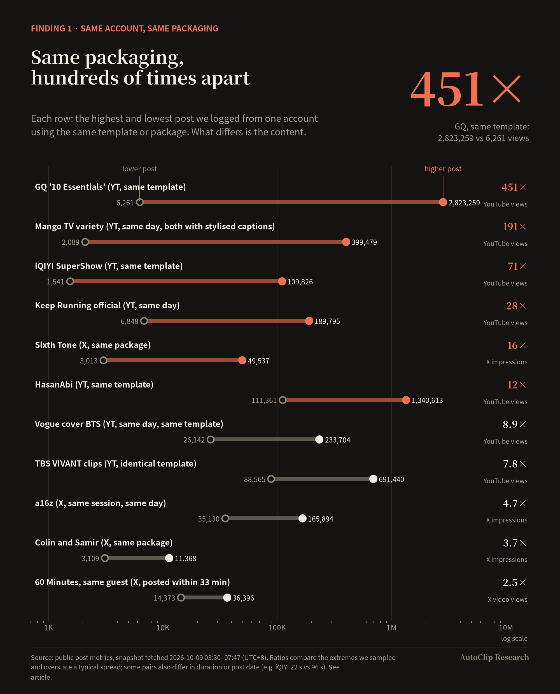

Research30 min read
Pick the moment, not the effect: what 158 short clips taught us about what drives views
We logged 158 public short clips and compared high and low performers within the same account. Who or what is in the clip, and where the clip starts, predicted views far better than how it was edited.